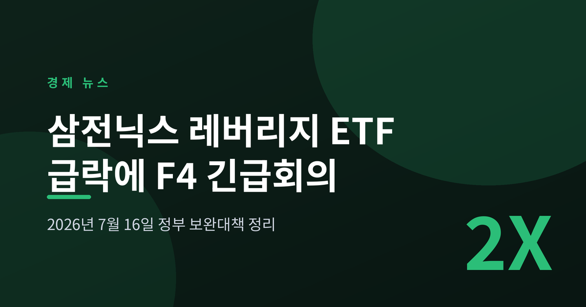
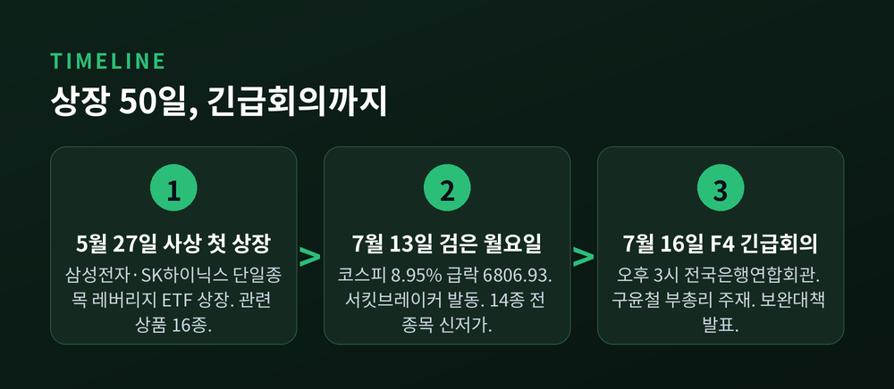
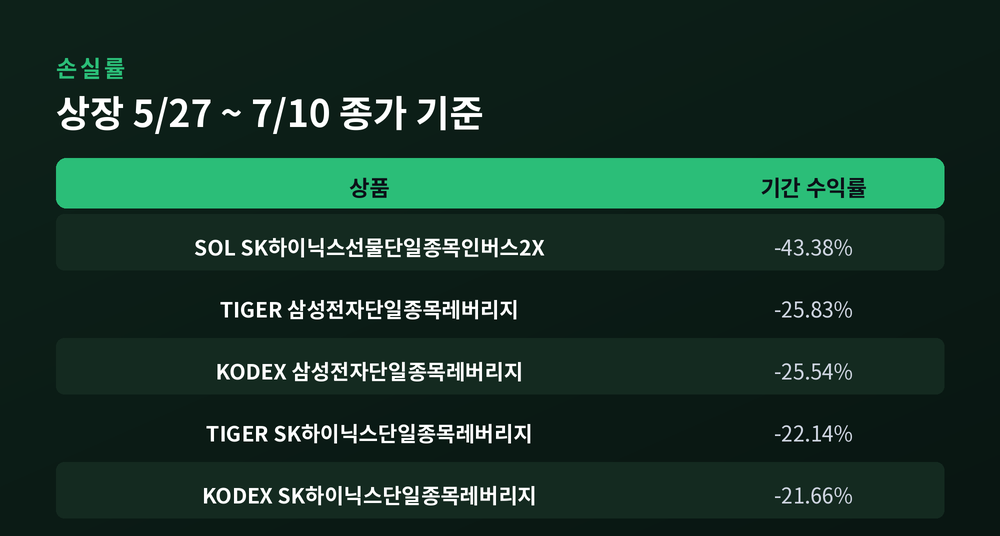
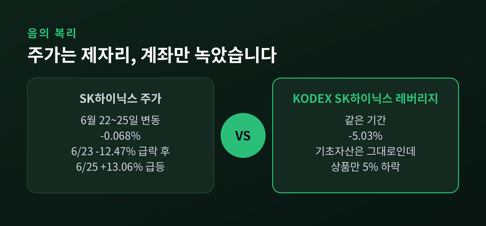
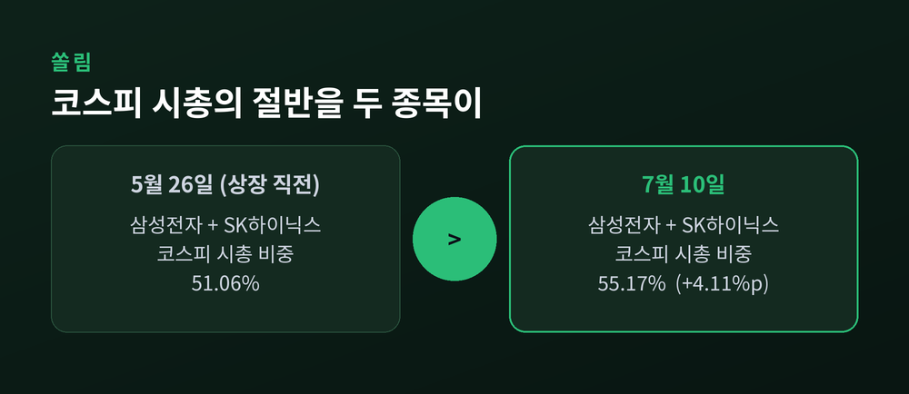
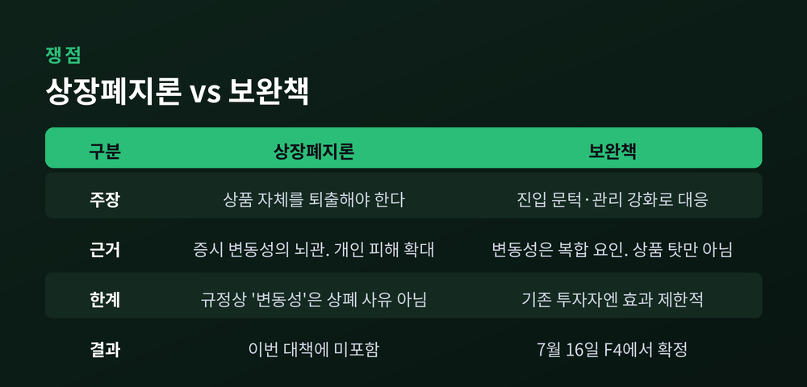
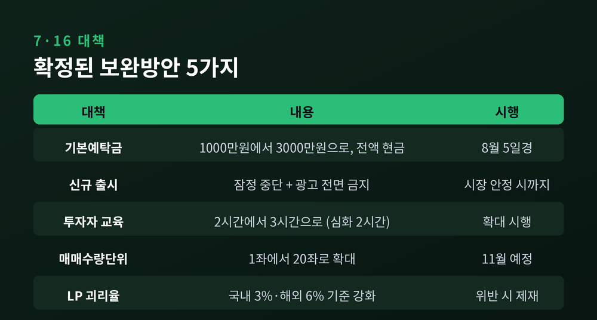

이번 글에서는 삼성전자·SK하이닉스 단일종목 레버리지 ETF의 급락과, 2026년 7월 16일 열린 F4 긴급회의의 보완대책을 정리해 보겠습니다. 무슨 일이 있었고, 왜 문제가 됐으며, 어떤 쟁점이 남았는지 순서대로 짚겠습니다.
먼저 밝혀둡니다. 이 글은 정보 제공 목적이며 투자 권유가 아닙니다. 특정 종목이나 상품의 매수·매도를 권하지 않습니다.
2026년 7월 16일 오후 3시, 서울 중구 전국은행연합회관에 네 사람이 모였습니다.
구윤철 경제부총리 겸 재정경제부 장관, 신현송 한국은행 총재, 이억원 금융위원장, 이찬진 금융감독원장. 이른바 F4로 불리는 시장상황점검회의입니다.
의제는 하나였습니다. 삼성전자·SK하이닉스 단일종목 레버리지 ETF, 시장에서 '삼전닉스 레버리지'라 불리는 상품입니다.
전날인 7월 15일 이재명 대통령이 업무보고에서 보완대책을 신속히 마련하라고 지시한 데 따른 회의였습니다.
이 상품이 상장된 날은 5월 27일입니다. 국내 증시 사상 처음이었습니다. 상장에서 긴급회의까지 걸린 시간은 약 50일이었습니다.

한국거래소 집계를 보면 상장 첫날인 5월 27일부터 7월 10일까지 관련 상품 16종은 대부분 20%를 웃도는 하락률을 기록했습니다.
가장 크게 빠진 것은 SOL SK하이닉스선물단일종목인버스2X로 -43.38%였습니다. 상장 첫날 1만6265원이던 종가가 7월 10일 9210원까지 내려앉았습니다.
TIGER 삼성전자단일종목레버리지는 -25.83%, KODEX 삼성전자단일종목레버리지는 -25.54%를 기록했습니다. SK하이닉스 레버리지도 TIGER -22.14%, KODEX -21.66% 수준이었습니다. (헤럴드경제 7월 13일)
그리고 7월 13일, 시장은 '검은 월요일'을 맞았습니다.
코스피는 669.01포인트, 8.95% 급락해 6806.93으로 마감했습니다. 두 달 만에 7000선이 무너졌고 서킷브레이커가 발동됐습니다. 오전 10시 34분에는 매도 사이드카까지 걸렸습니다.
이날 레버리지 ETF 14종은 모두 장중 상장 이후 최저가를 새로 썼습니다.
KODEX SK하이닉스단일종목레버리지는 장중 1만4835원까지 밀렸습니다. 6월 23일 최고가 4만4385원과 비교하면 약 66.6% 하락한 수준입니다. TIGER 삼성전자단일종목레버리지도 장중 1만2035원으로, 6월 2일 고점 3만395원 대비 약 60.4% 내렸습니다. (뉴스핌 7월 13일)
시장 규모도 빠르게 줄었습니다. 6월 25일 16조원을 웃돌던 16종의 시가총액은 7월 13일 9조6536억원이 됐습니다. 약 6조3000억원이 한 달도 안 돼 증발한 셈입니다.

왜 이렇게까지 손실이 커졌을까요.
핵심은 이 상품이 기초자산의 '일일 수익률'을 2배로 추종한다는 데 있습니다. 누적 수익률의 2배가 아닙니다. 이 차이가 결정적입니다.
주가가 한 방향으로 꾸준히 움직이면 문제가 덜합니다. 그러나 등락을 반복하면 손실이 복리로 쌓입니다.
실제 사례가 명확합니다. SK하이닉스는 6월 23일 12.47% 급락한 뒤, 25일 13.06% 급등했습니다. 22일부터 25일까지 주가 변동은 -0.068%. 사실상 제자리였습니다.
그런데 같은 기간 KODEX SK하이닉스단일종목레버리지는 5.03% 하락했습니다. (헤럴드경제 7월 13일)
기초자산은 그대로인데 상품만 5% 녹은 것입니다. 이것이 '음의 복리', 또는 변동성 잠식이라 부르는 현상입니다.
그럼에도 자금은 몰렸습니다. 16종에 대한 개인투자자 순매수는 상장 이후 7월 10일까지 약 13조8163억원에 달했습니다. 같은 기간 코스피 전체 개인 순매수 76조8211억원의 17.98%입니다. 반면 코스닥에서는 2조4383억원이 순매도됐습니다. 개인 자금이 코스닥을 빠져나와 이 상품으로 옮겨간 모습입니다.
KODEX SK하이닉스단일종목레버리지는 일평균 거래대금 약 4조2014억원으로, 전체 ETF 가운데 거래대금 1위를 기록했습니다.

이 사안이 한 상품의 손실 문제로 끝나지 않는 이유가 있습니다.
상장 직전인 5월 26일, 삼성전자(우선주 포함)와 SK하이닉스가 코스피 시가총액에서 차지하는 비중은 51.06%였습니다. 그런데 7월 10일에는 55.17%까지 올라갔습니다. 한 달 반 만에 4.11%포인트가 더 커졌습니다.
거래대금 비중도 약 30%에서 7월 8일 기준 44%로 높아졌습니다. (헤럴드경제 7월 13일)
예전엔 코스피가 흔들려도 업종이 분산돼 충격이 나뉘었습니다. 지금은 두 종목이 흔들리면 지수 전체가 함께 출렁입니다.
박우열 신한투자증권 연구원은 미국과의 차이를 이렇게 설명했습니다. "시가총액 비중이 가장 큰 엔비디아도 레버리지 ETF가 나올 당시 지수 비중은 2~3%에 불과했고 현재도 8% 수준"이라는 것입니다. 반면 삼성전자와 SK하이닉스는 코스피200 대비 65% 수준을 차지합니다.
이준서 동국대 경영학과 교수의 지적도 뼈아픕니다. "미국은 단일종목 레버리지 ETF가 400개, 대상 기업만 100개, 운용자산 총액은 50조원 수준"인데 "우리나라는 겨우 2개 기업, 16개 종목으로 운용자산이 16조원에 이르는, 말이 안 되는 규모"라는 것입니다.

정치권에서는 상장폐지론이 나왔습니다. 7월 6일부터 본격화됐습니다.
국민의힘 정점식 원내대표는 "삼성전자와 SK하이닉스 단일종목 레버리지 ETF를 무리하게 도입한 것은 주식시장을 비정상적인 카지노 도박판으로 만든 최악의 결정"이라며, 도입을 주도한 김용범 청와대 정책실장의 해임을 촉구했습니다. (뉴시스 7월 14일)
책임론에는 배경이 있습니다. 이 상품은 해외로 빠져나가는 자금을 국내에 붙잡아 두려는 목적, 즉 외환시장 안정이라는 정책 목표 아래 속도감 있게 추진된 측면이 있었습니다. 명분은 '국내외 비대칭규제 해소'와 '증시 선진화'였습니다.
정작 김용범 실장은 7월 10일 브리핑에서 이렇게 말했습니다. "단일종목 레버리지 ETF가 처음 도입된 제도이니 보완이 필요하면 시장상황 점검회의에서 결정을 내려주지 않을까 생각하고 있다."
다만 상장폐지는 현실성이 낮다는 의견이 우세했습니다.
한국거래소 유가증권시장 상장규정이 정한 ETF 상폐 사유는 순자산총액 미달, 기초지수 추종 실패, LP 부재, 투자신탁 해지 등입니다. '변동성이 크다'는 이유만으로는 상폐가 불가능합니다. '공익과 투자자 보호를 위해 거래소가 인정하는 경우'라는 포괄 조항이 있으나, 이를 근거로 ETF를 상폐한 전례는 확인되지 않았습니다.
게다가 강제 청산 과정에서 기초자산 수급에 충격이 갈 수 있습니다. 이 상품군은 거래대금과 유동성이 최상위권이라, 일반적 상폐 요건과는 정반대 위치에 있습니다.
그래서 배수를 2배에서 1.5배로 낮추는 안, 단일종목 레버리지 전용 변동성완화장치(VI)를 두는 안, 대상 종목을 시총 상위 20~30개로 넓혀 자금을 분산시키는 안 등이 거론됐습니다.
한 운용업계 관계자의 말은 되새길 만합니다. "처음부터 현대차, 네이버, 주요 금융주 등 시가총액 상위 20~30개 종목까지 문을 열었더라면 자금이 분산돼 지금 같은 쏠림은 훨씬 덜했을 것"이라는 지적입니다.

F4 회의는 최근 변동성을 특정 상품 하나의 탓으로 규정하지 않았습니다. 주가 급등에 따른 차익실현과 리밸런싱, 글로벌 AI 경기와 반도체 업황 전망, 한국 경제의 높은 반도체 비중이 복합 작용한 결과라고 평가했습니다. 다만 상품의 시가총액과 거래대금이 빠르게 늘면서 변동성 확대 우려가 생겼다고 봤습니다.
확정된 대책은 다음과 같습니다.
첫째, 기본예탁금을 1000만원에서 3000만원으로 올립니다. 전액 현금이어야 합니다. 8월 5일경 시행되며, 신규 투자자뿐 아니라 기존 투자자의 추가 매수에도 적용됩니다. 8월 19일경부터는 대용증권이 예탁금으로 인정되지 않습니다.
둘째, 신규 출시를 잠정 중단하고 광고를 전면 금지합니다. 시장이 안정될 때까지입니다. 레버리지뿐 아니라 단일종목 인버스·커버드콜의 신규 상장도 멈춥니다.
셋째, 투자자 교육을 2시간에서 3시간으로 늘립니다. 심화교육이 1시간에서 2시간으로 확대됩니다.
넷째, 매매수량단위를 1좌에서 20좌로 확대합니다. 11월 시행 예정입니다.
다섯째, LP의 괴리율 관리 의무 기준을 강화합니다. 현재 국내주식 ETF·ETN은 3%, 해외주식은 6%입니다. 위반 시 증권사·운용사 제재도 강화됩니다.
상장폐지와 배수 조정은 이번 대책에 담기지 않았습니다. 당국은 지속 모니터링하며 필요하면 추가 방안을 검토하겠다고 밝혔습니다.
참고로 같은 날 한국은행 금융통화위원회는 기준금리를 0.25%포인트 올려 연 2.75%로 결정했습니다. 3년 6개월 만의 긴축 전환입니다.

대책의 실효성을 두고는 평가가 갈립니다.
"변동성을 즉시 낮추기엔 역부족"이라는 진단이 나옵니다. 진입 문턱을 높이는 방식이라 이미 들어와 있는 투자자에게는 효과가 제한적이라는 것입니다.
"비대칭 규제를 풀자더니 3천만원 장벽"이라는 지적도 있습니다. 도입 명분과 정면으로 충돌한다는 뜻입니다.
전문가들의 진단도 한쪽으로 모이지 않았습니다. 이준서 교수는 이 상품을 변동성의 "주범은 아니지만 종범"이라고 표현했습니다. 염동찬 한국투자증권 연구원은 "변동성의 원인이라기보다 변동성을 증폭시키는 요인"이며 "최근 변동성을 레버리지 ETF만으로 설명하기는 어렵다"고 했습니다.
반면 상품 자체를 문제 삼는 시각도 여전합니다. 코스피200 레버리지 ETF가 16년 넘게 거래돼 왔지만 이런 논란은 없었다는 반론과, 그때는 기초자산이 지수였지 시총 절반을 차지하는 두 종목이 아니었다는 재반론이 부딪칩니다.
결국 확인되지 않은 것이 남습니다. 8월 5일 예탁금 요건이 실제로 어떤 효과를 낼지, 반도체 업황 전망이 어느 쪽으로 기울지는 지금 단정할 수 없습니다.
정리하면 이렇습니다.
한 상품의 설계 하나가 시장 전체의 변동성 논쟁으로 번졌고, 50일 만에 규제가 되돌아왔습니다. 상품이 나쁘다기보다, "시총 절반을 차지하는 두 종목에 2배 레버리지를 얹은 구조"가 문제의 자리였습니다.
다시 한번 말씀드립니다. 이 글은 정보 제공을 위한 정리이며, 어떤 투자 판단도 권하지 않습니다. 투자의 책임은 언제나 투자자 본인에게 있습니다.
제도는 보완할 수 있습니다. 다만 이미 손실을 본 계좌까지 되돌려주지는 못합니다. 그것이 이번 일이 남긴 가장 무거운 대목이라고 생각합니다.